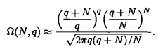

HOME Manipulation of natural expressions# Usefull prewritten examples# Two Einstein solids with N oscillators each. Makes use of approximation from this  Approximation of multiplicity for an Einstein Solid